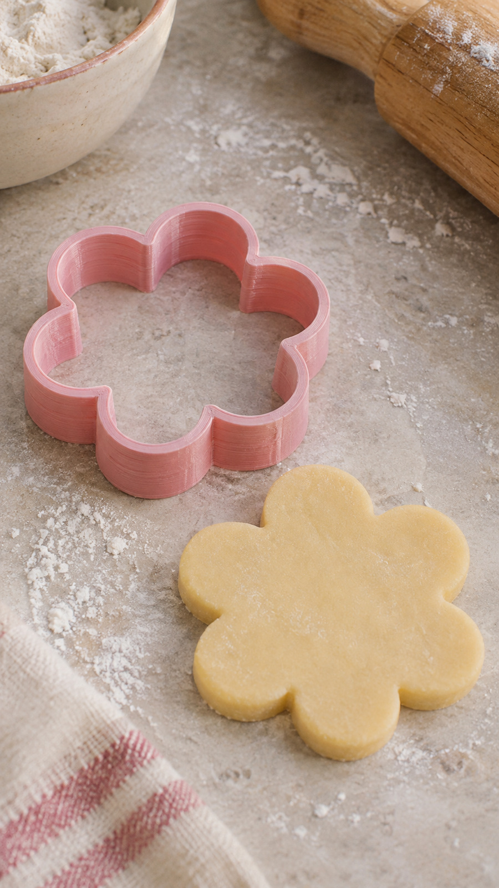
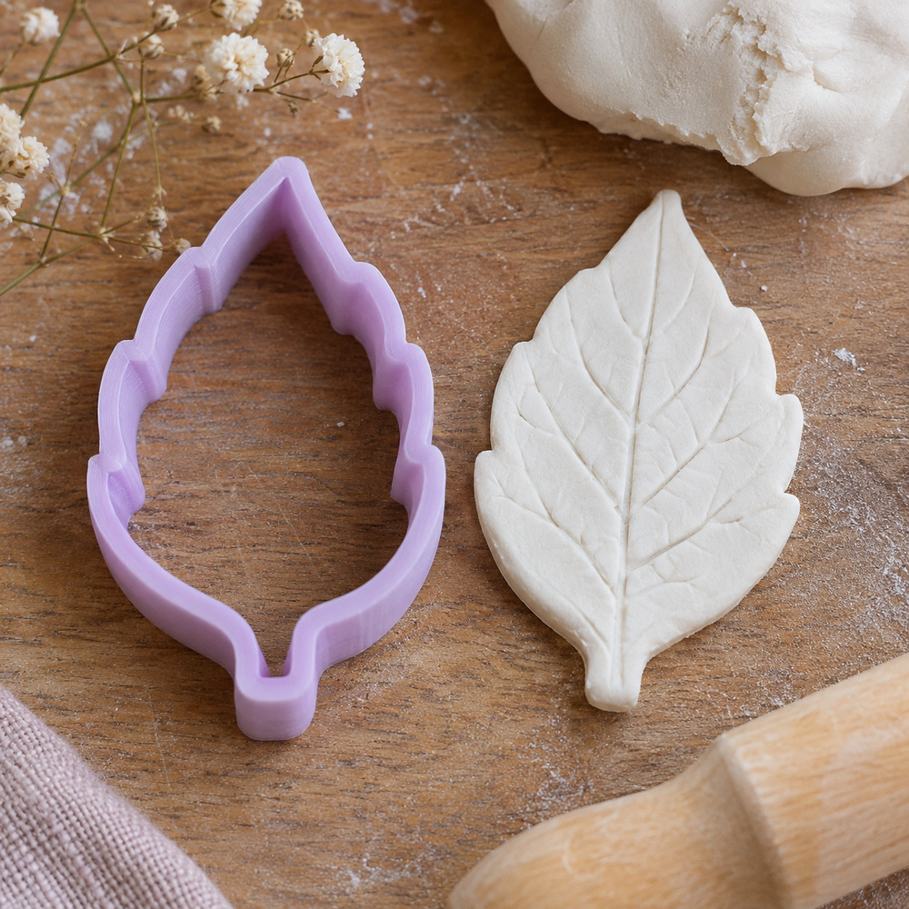

UNA NUEVA ETAPA PARA IMAGINAR
Cortantes 3D para crear con tus manos.
Para repostería, cerámica y porcelana fría. Elegí tus favoritos y empezá tu próxima idea.


ENCONTRÁ TU FORMA
¿Qué vas a crear hoy?
NUESTROS FAVORITOS
Elegidos para crear
Productos y precios ilustrativos para esta demo. Consultá disponibilidad.
CB CORTANTES 3D
Una nueva etapa, muchas formas de crear.
Somos un emprendimiento que comienza una nueva etapa con nuevos dueños. A los cortantes 3D para repostería sumamos propuestas para cerámica y porcelana fría.
Queremos que encontrar la forma para tu próxima creación sea tan simple como imaginarla.
Conocenos en Instagram ↗ANTES DE ELEGIR
Comprá con la información a mano.
01 / ENVÍOS
Tu pedido, a donde estés.
Consultanos por WhatsApp para conocer destinos, costos y tiempos de envío antes de comprar.
Consultar por envíos ↗02 / MEDIOS DE PAGO
Elegí cómo pagar.
Los medios de pago disponibles se confirman al realizar tu pedido. Escribinos y te contamos las opciones.
Consultar medios de pago ↗